Regras Cyberpunk RED
Criação do Personagem
A criação do personagem se inicia com, Nome, Altura e Idade, seguindo de Origem Cultural e Personalidade, algumas características específicas também são exigidas
Após isso são definidas as Habilidades ou STATs com um valor de 62 pontos
Logo após é escolhido 8 perícias adicionais e a divisão delas com um valor de 86 pontos
Depois da definição de Stats e Perícias o Mestre de Jogo vai definir com quais itens você começa, baseado no seu cargo e qual vai ser sua arma e cibernética
Siglas Básicas
- HP
- Pontos de vida
- HUM
- Humanidade
- CDT
- Cadencia de Tiro, quantas vezes uma arma pode ser disparada com uma única ação
- PP
- Pontos de Parada, valor referente ao quanto uma armadura ou tecnologia pode resistir a um valor de dano
- IP
- Improvement Points, pontos disponíveis para aumentar suas HABILIDADES
- SP
- Skill Points, pontos disponíveis para aumentar suas PERÍCIAS
Vida e Humanidade
Sua vida (HP) é calculada por uma tabela simples que combina a stat CORPO e VONTADE
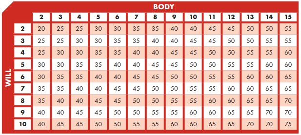
Sua humanidade é calculada pela stat EMPATIA, 1 ponto de empatia representa 10 pontos de humanidade e assim por diante
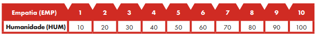
Medida que indica o quão bem você interage com o mundo e com as pessoas. Pessoas com humanidade muito baixa tem problemas em interações humanas, podendo se transformar em CIBERPSICOTICOS, se a sua humanidade cair abaixo de zero, representa a morte da sua vida emocional
História e Exploração
Além da história principal, vocês terão momentos de acesso a Night City. Poderão passear pela cidade, parar em lojas, comprar itens e melhorar cibernéticas. Mas saibam que estão suscetíveis a encontros nocivos aleatórios baseados na historia de cada personagem e na historia principal É possível iniciar 2 turnos de Loot durante o momento livre, os itens e E$ obtidos serão baseados nos valores de SORTE + 1d10 VS. Valor de Dificuldade A história principal é dependente de horário, cada movimento na cidade custará tempo, eu vou determinando isso. Vocês podem se locomover de carro, Delamain (Taxi), metrô ou a pé, cada um com seu custo de tempo baseado na distância de cada local Cada um de vocês terão acesso a um apartamento/esconderijo, ao longo da história ele começa a ficar conhecido e vocês sofrerão consequências se não mudaram de local
Turno e Combate
Durante seu turno você tem a disposição 1 Ação de Movimento + 1 Ação (Dentro de combate). Entrar em cobertura, levantar depois de cair e qualquer movimento conta como 1 Ação de Movimento. A verificação de habilidade (combate ou teste) é definida pela STAT do Atacante + Pericia + 1d10 VS. STAT do Defensor + Pericia + 1d10
O defensor ganha em caso de empate, caso supere você causa dano Abaixo está o padrão de turno de qualquer tipo de ação
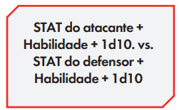
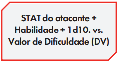
Ações Possíveis em Combate
Não é necessário seguir essa tabela a risca, o jogo é de vocês, a tabela serve mais para ter uma noção do que é possivel
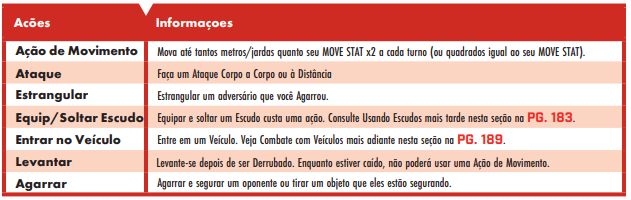
Existe algumas possibilidades e restrições em ações em combates:
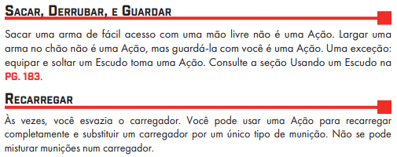
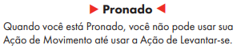
Combate Furtivo
Opção de combate dentro de qualquer situação
Para iniciar ser feito um teste de pericia de FURTIVIDADE, baseado no Valor de Dificuldade dos inimigos presentes É possível AGARRAR, ESTRANGULAR e ESCUDO HUMANO (Escudo humano pode ser feito fora da furtividade também). Agarrar é a ação necessária para poder Estrangular ou acionar o Escudo Humano
- AGARRAR
- DESTREZA + BRIGA + 1d10
- Sucesso = Pode estrangular e pegar ou remover a arma do defensor
- DESTREZA + BRIGA + 1d10
- ESTRANGULAR
- Dano = CORPO + 1d10
- Em caso de zerar o HP do inimigo ele fica inconsciente (não morre) e pode acordar rolando dados a cada 2 turnos
- Dano = CORPO + 1d10
- ESCUDO HUMANO
- Você estará protegido pelo corpo do defensor, consciente ou inconsciente, que terá o valor de HP baseada na stat CORPO do defensor, quando zerar você perde a proteção
Iniciativa
Valores de Dificuldade (DV)
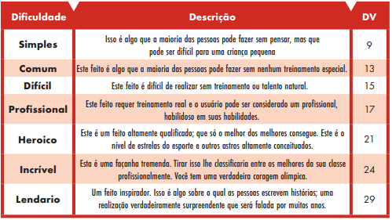
Sucesso e Falha Crítica
- Sucesso
- Tirar 10 no 1d10
- Rolar outro 1d10 e adicionar ao primeiro resultado
- Não acumula crítico
- Falha
- Tirar 1 no 1d10
- Role outro 1d10 e subtraia: STAT + PERICIA + PRIMEIRA ROLAGEM
- Não acumula crítico
Riscos e Curas da Vida Humana
Estados de Saúde
Há alguns estados de saúde, definidas pelo HP, e diversas lesões, determinadas por 2d6 quando está abaixo de 10HP
- Levemente Ferido
- Abaixo do total de HP
- Estabilizar VD10
- Gravemente Ferido
- Menos da metade de HP
- -2 em todas as Ações
- Estabilizar VD13
- Mortalmente Ferido
- Menos de 10 de HP
- -4 em todas as ações ou podem sofrer lesões críticas ou ficar inconscientes
- VD15 para recuperar 2 de HP ou acordar
- Quase Morto
- Perdeu todo HP
- TESTE DE MORTE
- Em caso de sucesso recupera 10HP, em caso de falha... morre
Também existem as lesões vocês terão conhecimento durante o jogo e com a forma que acontecem, e como resolver.
Teste de Morte
Quando estiver no estado de QUASE MORTO o jogador deve lançar 1d10, em caso de resultado menor que sua stat de CORPO, o jogador sobrevive e recupera 10HP, se lançar um 10, morre
Estabilização e Cura
Quando é feito o Teste de Estabilização o alvo cura um numero de HP referente a sua stat de CORPO.
É possível curar HP descansando ou dormindo.
- Pericias Necessárias para cura e estabilização
- Cibertecnologia, Primeiros Socorros, Paramédico e Cirurgia
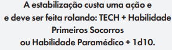
Trauma Team
Corporação responsável pela cura daqueles que possuem $$$, não atendem a ralé.
Dois planos disponíveis que os jogadores podem assinar (Pagamento por tempo) e podem adquirir durante o momento livre por Night City
- Plano Prata | E$500
- É cobrado E$200 em caso da necessidade de cirurgia, caso o jogador tenha o plano mas não pode ou não quer pagar ele tem a opção de ser levado imediatamente a um hospital.
- O Trauma Team Prata só pode ser acionado 1x por combate, cura totalmente o jogador. O Trauma Team Executivo pode ser acionado 2x por combate, também cura totalmente.
- Plano Executivo | E$1000
- Cobre tudo
A classe Executivo já inicia com o Plano Prata e não precisam pagar a assinatura
Todos os jogadores tem direito a serem atendidos no hospital, devem achar o seu jeito de chegar neles e a cura terá seu valor.
Riscos e Curas da Vida Cibernética
Ciberpsicose
O que é a Ciberpsicose? Perda de humanidade, perda de empatia de você com os outros, perda de auto-estima ou senso de auto-preservação. Dificuldade em empatia consigo mesmo e com os outros
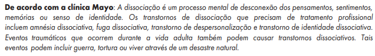
Resumindo “Por que não matar qualquer coisa que fique no meu caminho?”
O que pode causar a Ciberpsicose? A maior razão é o uso de certos implantes cibernéticos (Como o uso do Sandevistan) e a instalação de diversos cibernéticos em sua carne, outra coisa que pode causar é o vicio em drogas devido a perda de humanidade. Traumas mentais também causam perda de humanidade
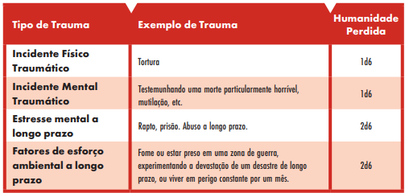
Como é medido?
- Sua EMPATIA é 3 ou mais
- Não há nenhum indicio de ciberpsicose
- Igual a 2
- No limite do transtorno dissociativo
- Igual a 1
- Transtorno dissociativo (Faça o seu melhor para interpretar de acordo)
- Igual a 0
- Ciberpsicose (Faça o seu melhor para interpretar de acordo)
- Abaixo de 0
- Ciberpsicose extrema, o personagem é entregue ao Mestre de Jogo\
Como se manter estável? É necessário o uso de IMUNOSSUPRESSORES injetáveis, eles podem ser comprados em qualquer medicanico de esquina, porem tem suas qualidades (1 a 5)
- +5 de Humanidade durante 1/2 dia
- +5 de Humanidade durante 1 dia
- +5 de Humanidade durante 2 dias
- +7 de Humanidade durante 2 dias
- +10 de Humanidade durante 3 dias
Para cada qualidade, tem o seu valor (E$).
Outra forma de resolver a sua Ciberpsicose (Antes da humanidade chegar a 0) é fazer coisas no mundo e na sua vida que aumente sua humanidade.
Qualquer ação que chame atenção enquanto estiver Ciberpsicótico, a MAX-TAC será acionada.
Você também tem a opção de entrar em psicoterapia intensiva
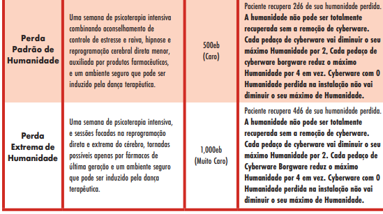
Habilidades
Todos os jogadores possuem essas estatísticas, o que difere de um para outro é o valor delas, são elas…
- Inteligência (INT)
- Força de Vontade (VONT)
- Moral (MORAL)
- Empatia (EMP)
- Técnica (TEC)
- Reflexos (REF)
- Sorte (SORTE)
- Corpo (CORPO)
- Destreza (DES)
- Movimento (MOV)
Perícias
São habilidades e coisas que seu personagem conhece ou pode fazer, representam seu nível de conhecimento
Todas as perícias são ligadas as suas STATS
Os jogadores possuem no total 20 perícias, sendo 12 obrigatórias e as outras 8 ficam a escolha do jogador
As perícias com “(2x)” valem 2 pontos, ou seja, se você tem 86 pontos e escolhe uma com
As 12 perícias obrigatórias precisam ter no mínimo ou igual a 2 pontos e máximo ou igual a 6 são elas:
- Atletismo | DES
- Briga | DES
- Concentração | VONT
- Conhecimento da Área | INT
- Sua área de escolha, roqueiro, solo etc
- Conversação | EMP
- Educação | INT
- Pode deixar com valor 2 (bem foda-se)
- Evasão | DES
- Um usuário com REF 8 ou superior pode desviar de ataques e disparos a distância
- Furtividade | DES
- Idiomas | INT
- Ao longo da história vocês encontrarão pessoas de outros países, isso influencia no quanto vocês conseguem o que querem com eles
- Percepção | INT
- Detecção de coisas ou inimigos escondidos
- Percepção Humana | EMP
- Detecção de mentiras e enganos
- Primeiro Socorros | TEC
Mesmo que o jogador não possua a perícia ele ainda pode fazer algo que envolva ela, mas não terá a adição do valor da perícia, seu acerto critico será nerfado e seu erro critico buffado
Abaixo está a lista da qual os jogadores devem escolher 8 para complementar sua tabela de perícias, as escolhas devem ser feitas com base no personagem e na intenção do jogador na partida, elas não possuem limite mínimo porem existe um máximo de 6…
Armas de Longo Alcance
- Armas de Mão | REF
- Pistolas e projéteis portáteis
- Armas de Ombro | REF
- Fuzis de precisão e de assalto, espingarda
- Armas Pesadas | REF
- Lançadores de granada e foguete
Consciência
- Rastreamento | INT
Controle
- Condutor de Veículo Terrestre | REF
- Piloto de Veículo Aéreo (2x) | REF
- Piloto Veículo Marítimo | REF
Corporais
- Contorcionismo | DES
- Manipulação do corpo para sair de algemas e amarras, pode se espremer em lugares ou espaços inacessíveis
- Dança | DES
- Aumenta humanidade
- Resistir à Tortura/Drogas | VONT
- Impede maiores efeitos de tortura e pode impedir se tornar viciado em alguma droga
Educacionais
- Biblioteconomia | INT
- Habilidade de usar banco de dados e outras fontes para encontrar fatos
- Burocracia | INT
- Habilidade para lidar com burocratas e agências de Corpes e do Governo
- Ciências | INT
- Criminologia | INT
- Criptografia | INT
- Habilidade para criptografar ou decodificar mensagens e arquivos
- Jogos de Azar | INT
- Sobrevivência na Natureza | INT
- Habilidade para saber sobreviver de forma confortável em ambientes inóspitos
- Trato com Animais | INT
Luta
- Armas Brancas | DES
- Artes Marciais (2x) | DES*
- Habilidade para aplicar golpes especiais
- Consultar o Mestre de Jogo
- Habilidade para aplicar golpes especiais
Performance
- Atuação | MORAL
- Pode se disfarçar
- Instrumento Musical | TEC
- Permite recuperar humanidade
Sociais
- Comércio | MORAL
- Permite fazer melhores negócios
- Interrogação | MORAL
- Manha | MORAL
- Habilidade de usar contatos para obter mercadorias ilegais e de contrabandos. Pode evitar situações ruins com criminosos ou em bairros ruins
- Percepção Humana | EMP
- Pode detectar mentiras
- Persuasão | MORAL
- Suborno | MORAL
Técnicas
- Abrir Fechadura | TEC
- Cibertecnologia | TEC
- Demolição (2x) | TEC
- Permite armar e desarmar explosivos e torretas de combate
- Falsificação | TEC
- Cria documentos e identidades falsas
- Paramédico (2x) | TEC
- Pode aplicar tratamentos médicos para Lesões Críticas que não precisam de cirurgia
- Pintar/Desenhar/Esculpir | TEC
- Permite recuperar humanidade
- Furto | TEC
- Tecnologia de Armas | TEC
- Pode reparar e melhorar armas
- Tecnologia de Veículos Aéreos e Terrestres | TEC
- Pode reparar e melhorar veículos
- Tecnologia Eletrônica/de Segurança (2x) | TEC
- Pode identificar, combater, reparar e instalar dispositivos eletrônicos de segurança
Artes Marciais*
- Artes Marciais
- 4 ou menos = 1d6 5 a 6 = 2d6 7 a 10 = 3d6 11 ou mais = 4d6
- Golpes Especiais
- DES + Pericia na Arte + 1d10
- Recuperar-se
- Sem Requisito
- VD13 (Valor de Dificuldade)
- Levantar não custa uma ação
- Sem Requisito
- Aiquidô
- Desarmar
- Sem requisito
- Sem requisito
- Punho de Ferro
- Sem requisito
- Sem requisito
- Desarmar
- Caratê
- Quebrar armadura
- Requisito - Ter atingido o mesmo alvo duas vezes com Artes Marciais
- Requisito - Ter atingido o mesmo alvo duas vezes com Artes Marciais
- Quebra-Ossos
- Requisitos - VONT Min. 8
- Requisitos - VONT Min. 8
- Quebrar armadura
- Judô
- Arremesso
- Arremessa o inimigo
- Arremesso
- Taekwondo
- Golpe Ponto de Pressão
- Requisito - VONT Min. 8
- Requisito - VONT Min. 8
- Voadora
- Requisito - VONT Min. 8 e ter se movimentado pelo menos 4 metros
- Requisito - VONT Min. 8 e ter se movimentado pelo menos 4 metros
- Golpe Ponto de Pressão
Progressão de Habilidade e Perícia
Qualquer ação ou tarefa feita com sucesso irá gerar pontos que você pode alocar da forma que quiser
O quanto e quando você ganha pontos será definido pelo Mestre do Jogo
Por exemplo, caso você faça uma ação com sucesso de Perícia, receberá SP, caso você realize uma ação com sucesso de Habilidades, receberá IP
Itens Iniciais dos Jogadores
Todos os jogadores tem direito a 5 itens e 1 esconderijo
- Uma arma
- Três itens comuns
- Uma cibernética
Os itens e o esconderijo são escolhidos pelo Mestre de Jogo, porém os jogadores podem indicar qual tipo de arma querem para que seja a mais próxima do seu estilo de vida e combate A única classe que deve receber mais itens é a de Trilha-Rede, devido a necessidade de mais aparelhos para exercer suas funções
Habilidades de Cargos
Os benefícios são determinados pelo Impacto em Graduação determinado pelo valor da perícia Conhecimento de Área
Roqueiros
Impacto Carismático
Os Roqueiros podem impactar grupos e pessoas a se tornarem seus fãs e a cada nível de Graduação eles podem fazer diversas coisas para o Roqueiro
O Mestre de Jogo determina se alguém que você conhece na rua é fã ou não
Para tornar alguém ou um grupo em fã é necessário rolar dados
- Impacto Carismático (Graduação) + 1d10 VS. Valor de dificuldade da pessoa ou do grupo
Os Valores de Dificuldades são determinados em:
- Um único fã
- VD8
- Grupo Pequeno de Fãs
- VD10
- Grupo Grande de Fãs
- VD12
Vantagens de cada nível de Impacto Carismático (Graduação)
- Nível 1 e 2
- Um único fã pode fazer um pequeno favor, comprar comida ou bebida e dar carona
- Um pequeno grupo (de até 6) pode oferecer objetos pessoais
- Ta brincando né?! Você não tem um grande grupo de fãs
- Nível 3 e 4
- Um fã pode realizar um grande favor, ir para cama com o Roqueiro (aumenta humanidade), ou falar bem dele (aumenta humanidade)
- Um pequeno grupo (de até 6) pode sair regularmente com o Roqueiro, comprar bebidas, comidas e drogas
- Com um grande grupo de fãs o Roqueiro tem a possibilidade de vender suas musicas e produtos em troca de E$
- Nível 5 e 6
- Pode convencer um fã a cometer um pequeno crime, como furto ou ajudar em uma briga
- Um pequeno grupo de fã (até 6) fazem favores grandes e atendem as necessidades do Roqueiro
- Um grande grupo estão espalhados pela cidade, são leais e muitas vezes podem fazer grandes favores em troca de atenção
- Nível 7 e 8
- Um fã está disposto a dar sua vida pelo Roqueiro sem hesitar
- Um pequeno grupo pode cometer crime pequeno ou ajudar na briga
- Um grande grupo forma uma rede de informações para ajudar o Roqueiro
- Nível 9
- Um fã pode cometer crimes graves
- Um grupo pequeno pode cometer crimes graves
- Um grupo grande são similares a seguidores de um culto, podem se revoltar, destruir propriedades e até matar o Roqueiro
- Nivel 10
- O fã está disposto a se sacrificar pelo Roqueiro
- Um pequeno grupo está disposto a arriscar suas vidas pelo Roqueiro, atuando como proteção pessoal
- Um grande grupo servem como um exército privado em função do Roqueiro
Solos
Deflexão de Dano
Os Solos podem cortar o dano pela metade uma vez por combate
Caso receba 20 de dano para HP (não conta para armaduras, escudos e escudos humanos) os Solos podem ativar sua habilidade e receber metade do dano, ou seja, 10
Homem da Lei
Reforços
Os Homens da Lei tem direito a chamar personagens como reforço 1x por combate
O reforço dura uma rodada (turno de todos) para chegar
Combate e defesa
- Número de Combate (NC) (referente ao nível) + 1d10
- Nível 1 e 2
- Segurança Corporativa
- Quatro Seguranças
- Pistolas Pesadas e Kevlar
- NC 8 | PP 7 | PV 20 | MOV & CORPO 4
- Quatro Seguranças
- Segurança Corporativa
- Nível 3 e 4
- Policiais Locais
- Quatro Policiais
- Dois carros terrestres, Pistolas Pesadas e Kevlar
- NC 10 | PP 7 | PV 25 | MOV & CORPO 5
- Quatro Policiais
- Policiais Locais
- Nível 5 a 7
- Departamento do xerife
- Dois agentes
- Carro de Alta Performance, Fuzis de Assalto e Jaquetas Blindadas Pesadas
- NC 14 | PP 13 | PV 35 | MOV & CORPO 4
- Dois agentes
- Departamento do xerife
- Nível 8
- Delegado de uma zona em Recuperação
- Supermoto, Fuzil de Assalto, Lança Granadas e um Colete à Prova de Balas
- NC 16 | PP 15 | PV 50 | MOV & CORPO 6
- Delegado de uma zona em Recuperação
- Nível 9
- C-SWAT
- Dois agentes
- AV-4 (Voador), Fuzis de Assalto, Lança Foguetes, Armadura Metal Gear
- NC 15 | PP 18 | PV 35 | MOV & CORPO 4
- Dois agentes
- C-SWAT
- Nível 10
- Dois Agentes Federais/Interpol/FBI/Netwatch
- AV-4, Fuzis de Assalto e Jaqueta Blindada Leve
- NC 14 | PP 11 | PV 35 | MOV & CORPO 6
- Eles não seguem o grupo mas podem ficar na área após o combate, com isso podem usar seu NC 14 para as seguintes perícias
- Contabilidade, Atuação, Ocultar/Revelar Objetos, Criminologia, Criptografia, Dedução, Educação, Falsificação, Interrogação, Paramédico, Percepção, Cuidados Pessoais, Resistir à Tortura/Drogas e Rastreamento
- Dois Agentes Federais/Interpol/FBI/Netwatch
Aldecados (Nômades)
Reserva de Motores Familiar
Começa com um veículo básico e pode dirigir outros veículos (comprados ou roubados)
A variedade de veículos, aéreos, terrestres ou marítimos depende do Nivel de Graduação
- Nível 1 a 4
- Carro básico, Moto Aquática e Moto
- Nível 5 e 6
- Helicóptero, Carro de Alta Performance e Lancha
- Nível 7 e 8
- AV-4, Cruzeiros e Supermoto
- Nível 9 e 10
- Aerozep, AV-9, Supercarro e Iate
Executivos
Benefícios baseados no Nível de Graduação
- Nível 1
- Pacote completo de roupas executivas
- Não pode vender
- Pacote completo de roupas executivas
- Nível 3
- Membro de equipe
- Pode curar 2 de HP do Executivo, a cada rodada
- Membro de equipe
- Nível 5
- Um membro adicional
- Nível 6
- Apartamento no Corpe Plaza
- Trauma Team Prata
- Nível 8
- Trauma Team Executivo
- Motorista particular
- Nível 10
- Mansão em Beaverville
- Um Trilha-Redes
Itens para compra em Night City
Drogas de Rua
Ao receber uma dose o alvo é automaticamente afetado pelo EFEITO PRIMARIO da droga, quando o efeito passa o alvo rola VONT + Pericia (Resistir a Drogas) + 1d10 contra o VD do EFEITO SECUNDARIO da droga, podendo ou não criar o vicio
- Coca Sintética | E$20
- Efeito Primário
- Dura 4 horas
- +1 de REF
- Efeito Secundário
- VD15
- Se viciado, -2 de REF
- VD15
- Efeito Primário
- Impulso | E$50
- Efeito Primário
- Dura 24 horas
- +2 de INT
- Efeito Secundário
- VD17
- Se viciado, -2 de INT
- VD17
- Efeito Primário
- Quebra-Tudo | E$10
- Efeito Primário
- Dura 4 horas
- + 2 em pericias de: Dança, Contorcionismo, Conversação, Percepção, Persuasão e Atuação
- Efeito Secundário
- VD15
- -2 nas pericias citadas acima
- VD15
- Efeito Primário
- Laço Negro | E$50
- Efeito Primário
- Dura 24 horas
- Perde 2d6 de Perda de Humanidade ao tomar uma dose, que se desenvolve se ele não for afetado pelo Efeito Secundário
- Ignora os efeitos do estado de Ferimento Gravemente Ferido
- Efeito Secundário
- VD17
- -2 de REF
- VD17
- Efeito Primário
Como resolver o vício? Simples, terapia…
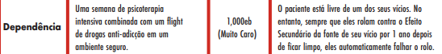
Itens Básicos
- Itens
- Agente (Celular) | +2 Biblioteconomia +2 Vestimenta & Estilo | E$100
- Algemas | Restringe | Corpo > 10 para romper | E$50
- Analisador Químico | Pode testar composição química da substancia | E$1000
- Arpéu | Dispara uma linha de arpéu até 30m. Não pode ser usado como arma | E$100
- Barraca e Equipamento de Acampar | E$50
- Binóculos | 2x a 3x de ampliação | E$50
- Bolsa de Tecnologia | Saco pequeno de ferramentas para consertar coisas | E$500
- Bolsa de Medicânico | Kit de ferramentas médicas | E$100
- Saco de Dormir | E$20
- Ciberdeque | Deck de Trilha-Rede com 7 espaços | E$500
- Codificador/Descodificador | E$500
- Computador | E$50
- Corda de Náilon | E$20
- Fita Adesiva | Pode brilhar no escuro | E$20
- Frasco de Biotoxina | 4 de dano por rodada | E$500
- Frasco de Veneno | 2 de dano por rodada | E$100
- Guitarra | E$500
- Injetor | +3 de vida | E$50
- Kit de Arrombamento | E$20
- Lanterna | E$20
- Levatudo | Bolsa com +10 de espaço | E$20
- Mêdiscaner | Diagnostica doenças e lesões. +2 para Primeiros Socorros e Paramédico | E$1000
- Óculos de VR | Projeta imagens do ciberespaço | E$100
- Pacote de Ração | +5 de vida | E$40
- Palito de Comida | +2 de vida | E$10
- Rastreador | E$500
- Sintetizador de Percurssão | E$500
- Tecnoescâner | Diagnostica tecnologia danificada. +2 para pericias de TEC | E$1000
- Coroa NDX | Permite assistir uma neurodança | E$1000
- Radio Comunicador | E$100
Cibernética
Equipamento Neural
- Analisador Químico | Testa composição quimica | Clínica - N/A | E$500 | PH - 3
- Editor de Dor | Ignora as penalidades de Gravemente Ferido | Clínica - N/A | E$1000 | PH - 14
- Kerenzikov | Equipamento de Velocidade. +2 para Iniciativa | Clínica - Medicânico | E$500 | PH - 14
- Melhoria Tátil | Detecta Movimento | Clínica - N/A | E$100 | PH - 7
- Sandevistan | Equipamento de Velocidade. +3 para Iniciativa | Clínica - Medicânico | E$500 | PH - 7
Ciberópticos
- Antibrilho | Imune a flashes | Clínica - Shopping | E$100 | PH - 2
- Dardo | Arma Exótica oculta no olho | Clínica - Medicânico | E$500 | PH - 2 | Dano - 2 | CDT - 1
- Melhoria de Imagem | +2 de Percepção | Clínica - Shopping | E$500 | PH - 3
Ciberáudio
- Analisador de Estresse na Voz | +2 de Percepção e Interrogação | Clínica - Shopping | E$100 | PH - 3
Cibernéticos Internos
- Anticorpos Melhorados | Cura 2x a cada dia de descanso | Clínica - Shopping | E$500 | PH - 2
- Brânquias | Respira embaixo da agua | Clínica - Hospital | E$1000 | PH - 7
- Implante Radar/Sonar | Escaneia o terreno (Não escaneia atras de uma cobertura) | Clínica - Medicânico | E$1000 | PH - 7
- Músculo Enxertado e Renda Óssea | +2 de CORPO (Nunca acima de 10) | Clínica - Hospital | E$1000 | PH - 14
- Vampyro | Arma Branca Leve escondida na boca (Pode adicionar Veneno) | Clínica - Medicânico | E$500 | PH - 14 | Dano - 2 | CDT - 2
Cibernéticos Externos
- Armadura Subdérminca | Protege Cabeça e Corpo | Clínica - Hospital | E$1000 | PH - 14 | PP11
- Capa de Pele | Protege Cabeça e Corpo | Clínica - Hospital | E$500 | PH - 7 | PP7
- Coldre Oculto | Oculta qualquer arma | Clínica - Medicânico | E$500 | PH - 7
Cibermembros
- Monofio | +3 de dano para inimigos afetados com Hacks Rapidos | Clínica - Medicânico | E$1000 | -3 de PH por uso | Dano - 8 | CDT - 2
- Estripadoras | +3 de dano para inimigos com menos de 10 de HP | Clínica - Medicânico | E$2000 | -5 de PH por uso | Dano - 10 | CDT - 1
- Mãos de Gorila | +2 de dano para inimigos sem cibernética | Clínica - Medicânico | E$2500 | - 6 de PH por uso | Dano - 12 | CDT - 2